Au Moyen Âge, tandis que les textes sacrés ou savants occupaient solennellement le centre des parchemins, les enlumineurs s’offraient un espace de liberté absolue sur les bords : les marginalia.
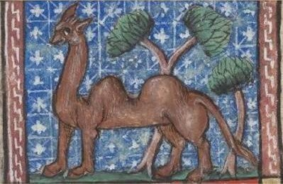
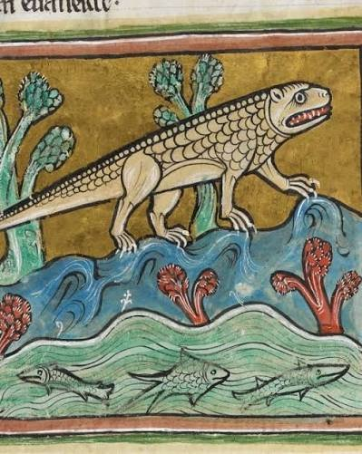
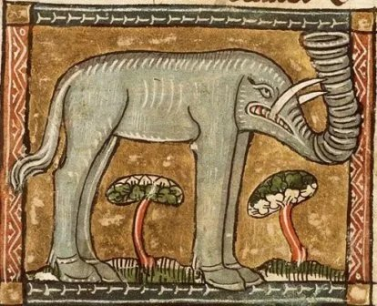
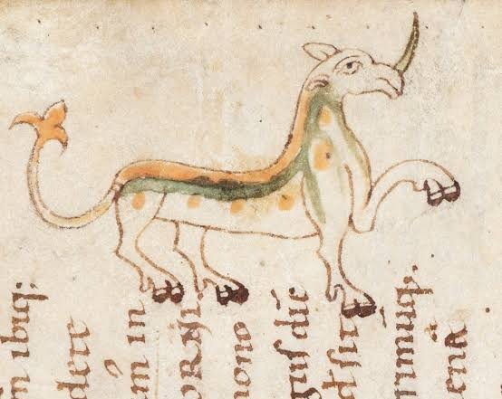
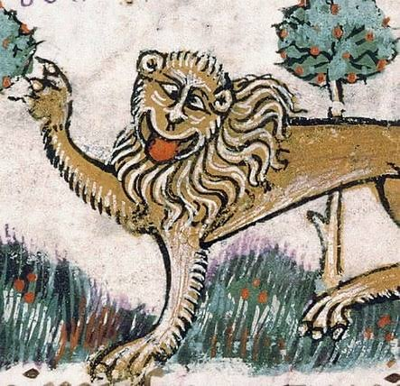
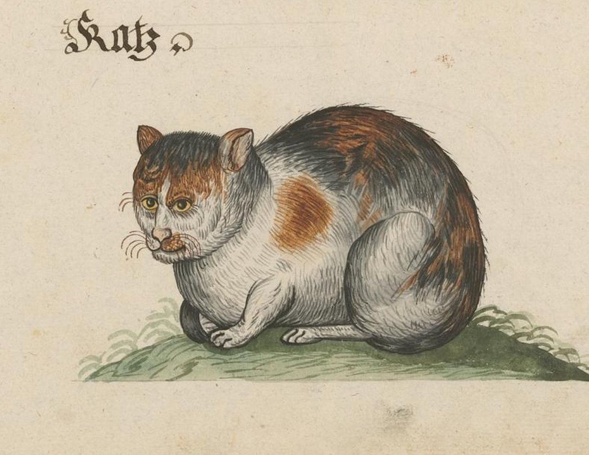
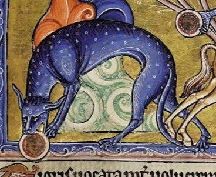
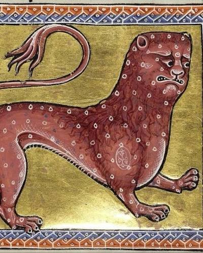
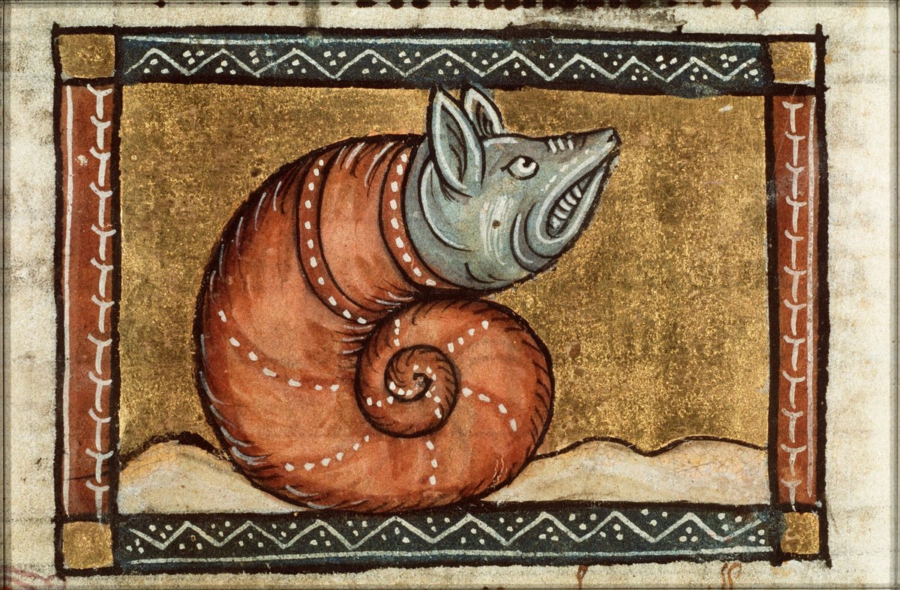
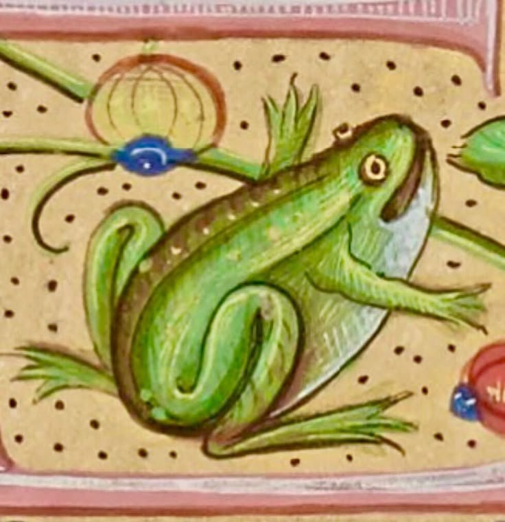
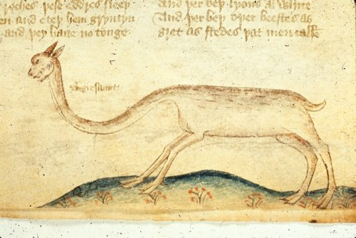
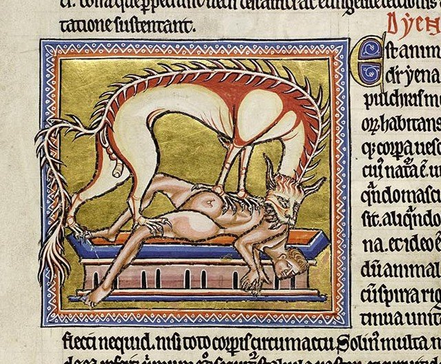
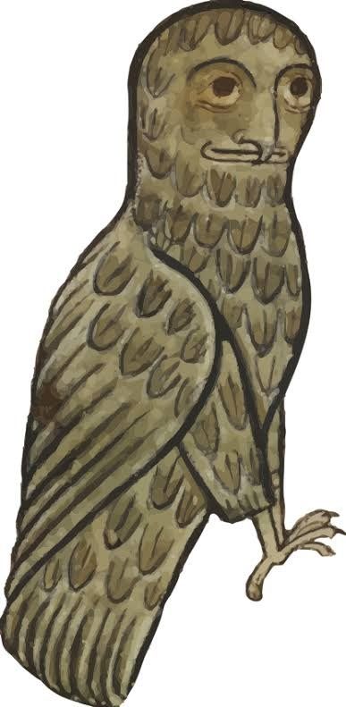
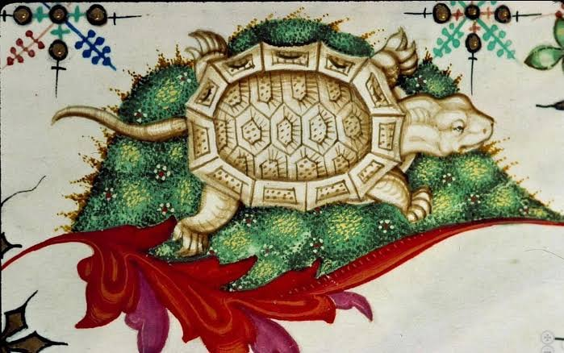
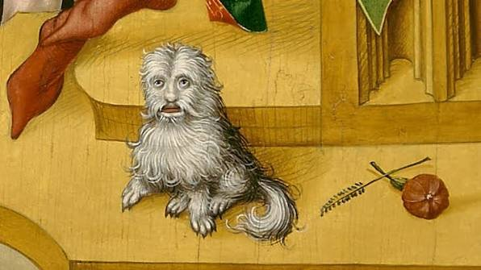
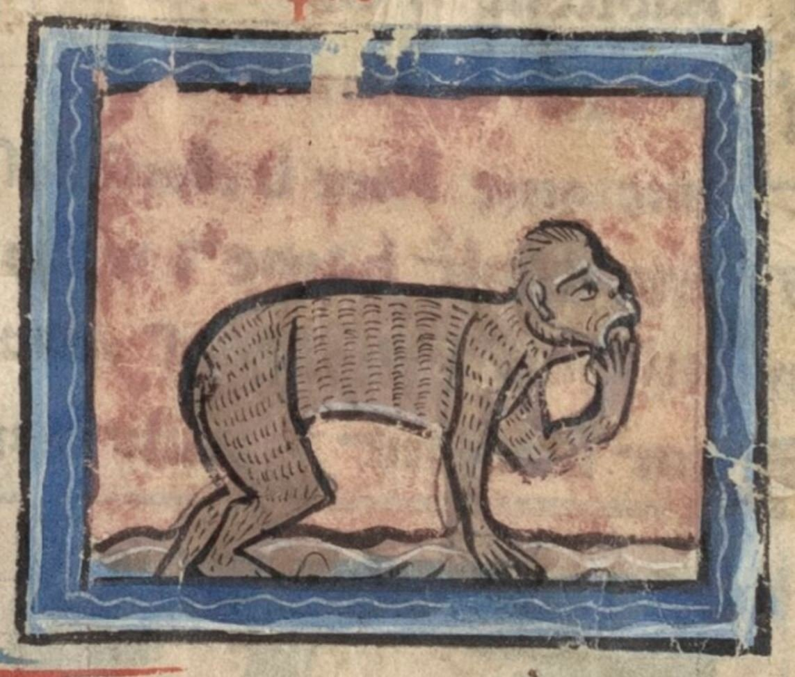
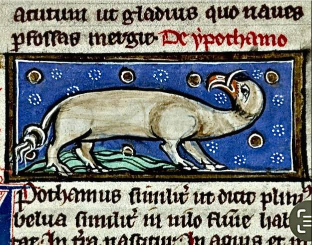
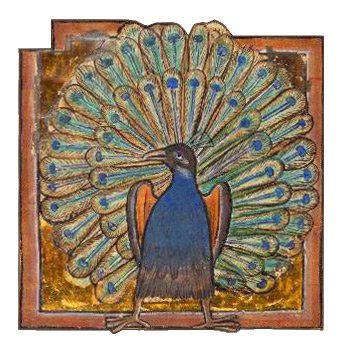